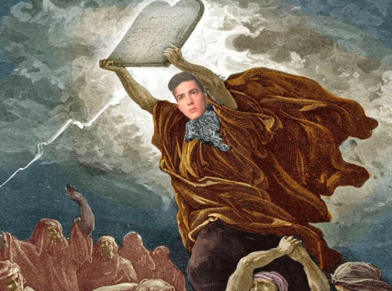
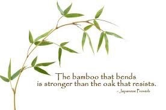
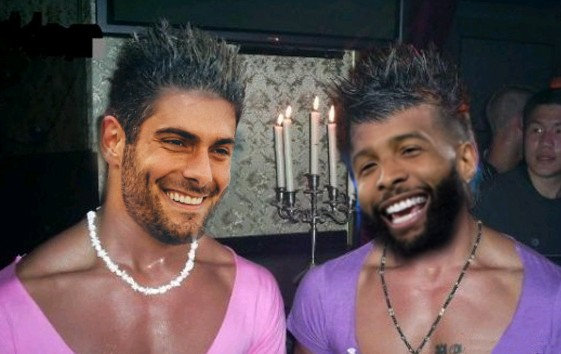
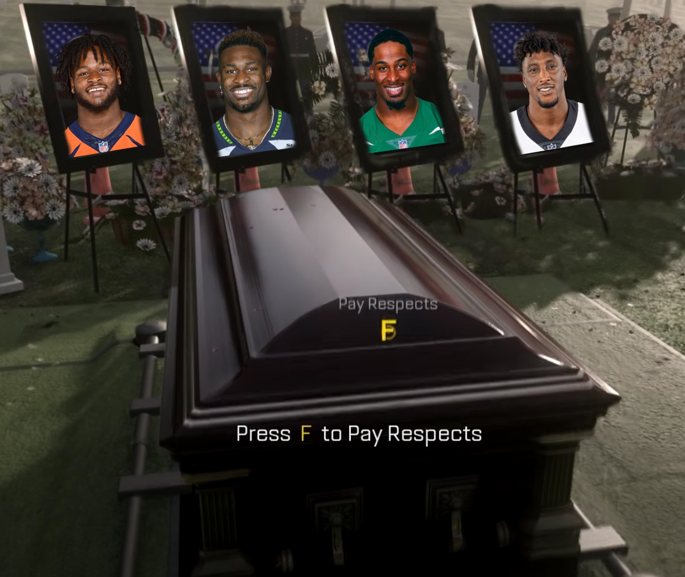

The official "The Big Dawgs" fantasy football website.
'Mish's 'Mandments
{{ n.news_post_title }}
{{ n.news_post | safe }}
Seventh 'Mandment
We’ve come to a time of the season where those moving on to the playoffs are ever so slowly becoming crystallized. True, there are a few whose positions are still a life or death battle each week, attempting to stave off the cold death of consolation. We cannot rest easy on our laurels, (well maybe this author can), but even I am not entirely above reproach. One thing that often bothers me in these times as I’m sure it bothers many of you, is the regrets of past roster transgressions. What if I had accepted that spicy offer before my player fell off a cliff? Why didn’t I put just a little more FAAB budget towards that early season waiver wire pickup? I’m here to tell you not to fret, not to waste your precious time by dwelling on what could have been. You have what is! What could soon be! What a glorious moment to grasp that sits just in front of you if you’ll only allow yourself to breathe and enjoy the beauty of the game.
- commish, out
Sixth 'Mandment
We are officially halfway through the season! I’d like to congratulate us all for our continued hard work and commitment to playing the best fantasy football that we can. Looking forward I am incredibly excited to see how the playoff push shakes out as top to bottom (other than the very bottom), no team is no more than a few games from a playoff bye or relegation to the consolation bracket. This is the closest I have seen the standings headed into the back half of the season and with only six out of the twelve owners being represented, the fight for the finish will be a memorable one. Stay vigilant, stay strong, and stay on the top of your game!
- commish, out
Fifth 'Mandment
When our brothers fall we must pick them up. It’s a simple statement, but one we often fail to follow through on. While some of us enjoy the luxuries of a winning record, others in our league languish with an even or sometimes a losing record! Even worse, there are some who walk amongst us without a single win to our name. Shocking I know. Some of you may ask things like, “why don’t they just win?” Or “why do they choose to be bad?”. This is a search for a simple solution to complex generational issue. We cannot hope to raise the less fortunate from fantasy impoverishment simply by telling them to pull up their bootstraps and work their way up through the waiver wire. We need direct action that will bring about restorative fantasy justice. What I am proposing today may seem radical, but the reality of our league calls for radical solutions. If each of us with a winning record donated just one win to a disadvantaged lower tier team, we could create a fair and equal league for years to come. It’s not trickle down, it’s pull up. Let’s all win.
- commish, out
Fourth 'Mandment
The league is strong! Communication is flowing and the player free market is flourishing! What we have been able to create in our first year as a 12 man league is nothing short of remarkable. Looking back to even the start of the season, we had the most memorable draft to date. We have followed it up with week after week of incredible storylines and matchups. Constant close games and embarrassing blowouts galore. I’m so proud of all of us. As we approach midseason I am positively brimming with excitement to see where this crazy story goes. The story… of us.
- commish, out
Third 'Mandment
Money, money, money, money, money Some people got to have it Do things, Do things, do bad things with it Dollar bills, yall For that lean, mean, mean green Almighty dollar Talkin about money Give me a nickel, brother can you spare a dime Money can drive some people out of their minds Money, money, money, money, money
Not only do these words open every episode of The Apprentice hosted by the 45th president of the United States, they are also the thoughts rushing through each of our minds as we enter our weekly waiver bids. Maybe it’s just me, but I just can’t seem to figure out what the worth of a player is when we must assign a dollar value to them. Especially so without much of a scale to weigh them against. Our league’s first year as a FAAB waiver system has been one filled with overpays that are often made to be the joke, but we should remember we are all in this learning process together. As we gain knowledge and learn how to accurately assess player worth and the individual monetary strategy of our league opponents, we will find less and less comedy in each other, and unlock a new part of this beautiful game we all love.
- commish, out
Second 'Mandment
The big story entering week 3? The wheat, and its inevitable seperation from the chaff. You see wheat and chaff normally live in perfect harmony, much like all of our league. It dances idly in the breeze, holding onto one another because they need each other, they love each other. However, every autumn something pretty fucking crazy happens. They leave each other, they become individuals with one holding the clear and obvious value, the wheat. We make delicious cereal from it, some bread, and pretty much nothing else. The chaff however, that dreaded fucking chaff. Useless. Disgusting. Not even fit for pig slop. This is much like how our league is shaking out today. The Fallen Angels paced at the top by fantasy pimps Teteo and Bryan, with four 1-1 teams nipping at their heels, a healthy division where nothing is decided. Then we have the upper elite of Satan’s Squadron, Andrew. Really the only positive from that dreaded division. These teams make up the nutritious and delicious wheat of the league. Those other members not included make up the dreaded chaff. Time will tell if any of these chaff-lings can complete a wheat-like metamorphosis moving into the later weeks, but for now it appears grim.
- commish, out
First 'Mandment
The league rests in a murky landscape after the first week of games. What many of us had hoped would be a revealing series of contests to show us clarity in the destinies of our chosen gridiron warriors, could be nothing more than a mirage seen on the horizon. One that as soon as we reach out to grasp the assured realization of our drafts, dissipates as nothing more than an early season load bust. Players this time last year who exploded onto the scene showing what must surely be fantasy stardom often times fell off a steep cliff as soon as their fates returned to the mean, Icarus manifest. All this is to say that as much as some of your surprising, or not so surprising, fantasy studs and duds may have you ripping out your hair or screaming to the heavens in joy, prepare for a market correction in week 2. Be ready to react but not overreact, and most of all don’t not react.
- commish, out

9/16/22: Fantasy Football Website Launch!
Welcome to the official "The Big Dawgs" fantasy football website. By using the bottom navigation bar you will be able to access: Up to date league news, weekly power rankings, league game previews, and communicate with your league-mates on the forum.
Musin' with the 'Mish
{{ n.messin_post_title }}
{{ n.messin_post | safe }}
Hot Fella Fall
Who’s the hottest guy in the nfl? For my money it’s gotta be Odell. Jimmy G is the boring asshole’s choice cuz he looks like Italian buzz lightyear. Real heads know that it’s OBJ though. 
Valor Earned not Stolen
It’s time we said it, fantasy football owners are stronger and more mentally tested than the troops. Yeah some dumb marine may get “ptsd” from “war”, but what about the pain we feel from a loss? It messed up the whole vibe of your week! Or when a player goes out with injury? It’s literally worse than the loss of a child. When will society begin to recognize us as the special citizens we are? I’m not asking for a national holiday, but would a reserved parking space kill ya? 
Call of Duty: Class Warfare
The league will now be separated into economic tiers. First, the 1%: Teteo, Jake, Bryan These people can pay to have you murdered and then murder the judge of the murder trial. If it even goes to trial. These teams will beat you into submission and then make you apologize for scuffing their shoes. DO NOT FUCK WITH THEM. Next, upper middle class: Sam, Colt, Ethan You didn’t read that wrong Ethan, welcome to the club. These teams make above their means. They have a two car garage, three kids, a timeshare on the coast, maybe a boat. They aren’t going to have coke orgies, but they can afford to get a deluxe package at Disney world every year. They can beat you, they should beat you, but they aren’t above a 2008 recession destroying their lives. The lower middle class: Zack, Jason, Caleb The salt of the earth. The real America. The people who make this country run. The people who are also probably not buying their kid a car for their 16th birthday. These guys get their bills in on time. Have some debt, and aren’t shopping at new seasons. These teams have enough to get it done, and on a good day can surprise you, but a championship (early retirement) probably isn’t in their cards. The weird guy who works at the mini mart: Andrew You remember him doing really well in high school. Hadn’t kept up and just assumed he was killing it in adulthood. You stop to fill up at circle K and he’s there behind the counter with big gauges in his ear and a face tat talking to you about how he’s getting in the studio to record on his new mixtape. Andrew blew us away with and incredible draft he was able to coast on until it all came crashing down. $20 on pump 3. Mid men who live in drainage ditches: Kyler, Josh As you drive along the dusty toll road you notice two filth covered figures fighting over what appears to be a gnarled chicken bone with a little gristle on it. These are not deranged stray mutts but are our beloved winless compatriots . You wonder how they got here: was it all just bad drafting? Injuries? Ill timed trades? Or were they just born this way. Living in god’s blind spot away from happiness and love.
Not superstitious, but a little bit stitious
What’s in a name? Does the effort put into a team name have an effect on a fantasy roster’s performance? In my own career I’ve found that my own superstition of needing to change my team’s name is not only a superstition, but also a signal of my own weekly hands on approach to forming a hopeful championship squad. While sifting through the waiver offerings and formulating trade offers I find it hard not to freshen up the team moniker to reflect my new weekly feeling. Does this mean that a team with a consistent name should expect to perform worse? No! We have only to look towards our own set and forget champion from last year Football Sucks. Now it could be argued that in some ways the stagnant title reflected a squad consisting of 2021 game-breakers Cooper Kupp and Derrick Henry. But I think it just goes to show that there are many paths to victory, just as there are many paths to a great team name.

Shower thoughts of an unwashed football fan
Football fucking rocks man. It’s like turn based strategy in real life. Preset attacks and defenses set before the snap goes live with chances for individual heroism at any second while the play runs its course. Like X-com for people who don’t know how to reset their Wi-Fi.
The Queen's Men
Lately I’ve found myself pacing about the grounds of my property line, searching for answers. Most of all, what would the queens fantasy lineup look like if she was in the Big Dawgs League. First off, Elizabeth, it should be noted was a raging racist. It is almost assured she would have sooner given back the north to Ireland than she would have a running back the likes of Leonard Fournette fighting in her stead. Similarly important to her love of bigotry was her enjoyment of the Hero RB draft strategy in which Liz would draft a sure fire stud RB early and follow that up with 3-4 rounds of heavy receiver recruitment. So we much assume a lineup following these guidelines would look something like this.
------------------>
The Queen's Men Pt.2
Round 1: Christian McCaffrey
White savior of the football skill position, easy
Round 2: Travis Kelce
A lucky drop for the monarch, a fantastic choice at a depleted position
Round 3: Michael Pittman
The queen’s eyesight did not allow her to completely realize that Michael is mixed race. But great value.
Pick 4: Adam Thielen
A reach for sure, but at this point the pool of fantasy relevant caucasians is getting thin.
Round 5: Dalton Schultz
Doubling up so early at TE is likely going to come back to bite Elizabeth later in the season.
Round 6: Rex Burkhead
Finally time to pick up her second RB, The Queen’s flawed draft strategy is beginning to topple.
Rounds 7-15
Hunter Renfrow, Aaron Rodgers, Daniel Carlson, Zach Ertz, Rob Gronkowski, Tyler Lockett, Hunter Henry, Kyle Juszczyk, Andrew Beck.
Final Record: 4-11